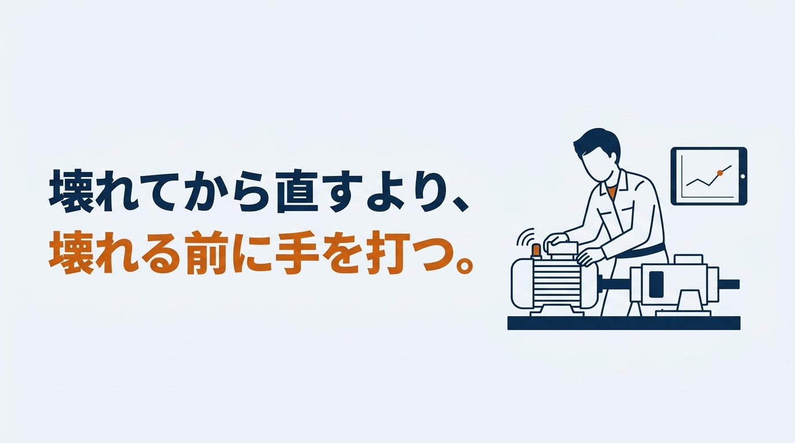
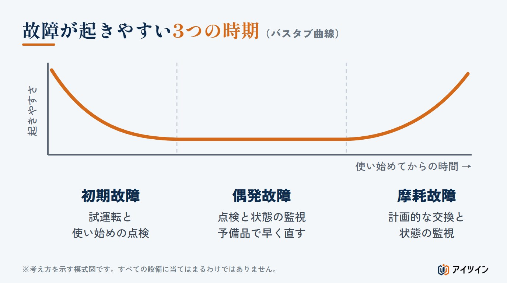
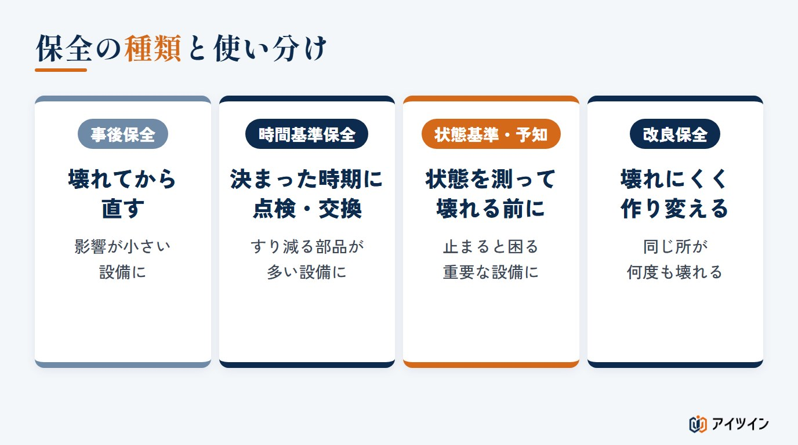
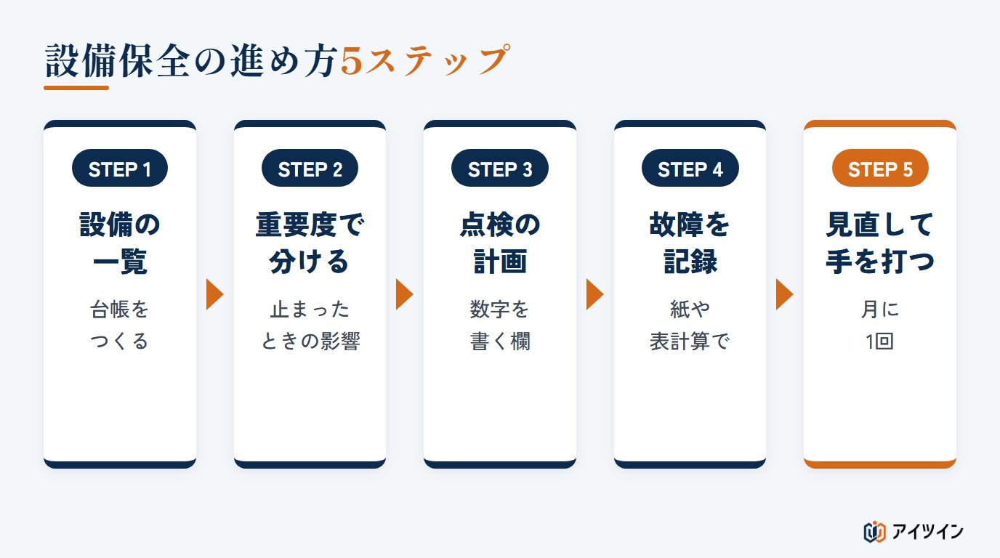
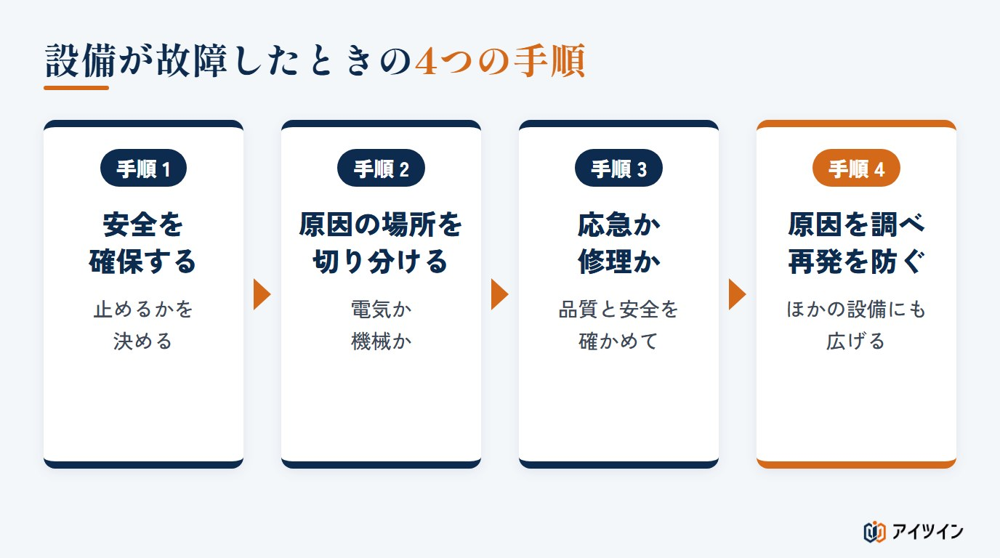
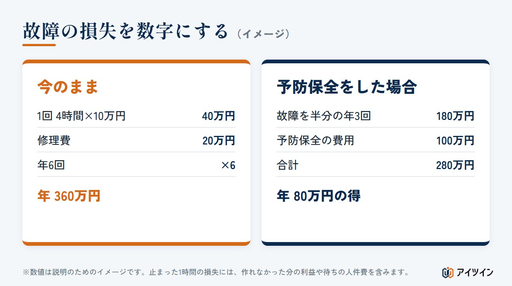

「設備が突然止まり、修理を待つ間、生産がまるごと止まった」「点検はしているのに、故障が減らない」。製造の現場では、設備の故障が納期や品質、働く人の負担に直結します。故障をゼロにはできなくても、保全のやり方しだいで、減らすことはできます。
本記事では、設備の故障を減らす保全の進め方を、故障が起きる原因と起き方、事後保全・予防保全・予知保全・改良保全の違いと選び方、保全の進め方、故障したときの初動、故障の損失の計算の順に解説します。後半では、保全の現場で故障を減らした実際の例もご紹介します。
この記事でわかること
- 設備が故障する5つの原因と、故障が起きやすい3つの時期
- 事後保全・予防保全・予知保全・改良保全の違いと、設備ごとの選び方、進め方
- 故障したときの初動と再発防止、故障の損失の計算（計算ツールつき）
設備保全とは｜故障を減らし、設備を止めないための活動
設備保全の目的は「止めない・品質・安全・長持ち」
設備保全とは、設備を点検し、手入れし、壊れたら直して、必要な働きを保ち続けるための活動です。目的は、主に次の4つに整理できます。突然止まって生産が途切れないようにすること。設備の状態の悪化から来る不良品を防ぐこと。設備の異常や事故から人を守ること。そして、設備の性能を保ち、できるだけ長く使えるようにすることです。これらを通じて、生産性を上げ、保全の費用を抑えることにもつながります。
「直す」だけでなく、「壊さない」「壊れにくくする」まで含む
保全というと、壊れた設備を直す仕事を思い浮かべがちです。しかし、壊れる前に点検や部品の交換をすること、壊れにくく直しやすい形に作り変えることも、保全に含まれます。故障を減らす近道は、壊れてから直す保全の割合を減らし、壊れる前に手を打つ保全を増やすことです。
この章のまとめ
- 設備保全は、設備の必要な働きを保ち続けるための活動
- 目的は、止めない・品質を守る・安全を守る・長く使うの4つ
- 直すだけでなく、壊さない・壊れにくくすることまで含む
設備が故障する5つの原因と、故障が起きやすい3つの時期
故障を減らすには、まず「なぜ壊れるのか」を知ることが大切です。原因によって、効く保全の方法が変わるからです。代表的な原因は次の5つです。実際の故障では、いくつかの原因が重なっていることもよくあります。
原因1：すり減り・疲れ・さびなどの劣化
軸受け（ベアリング）、シール、ベルト、刃物などは、使うほどすり減り、劣化していきます。金属のくり返しの疲れや、さびも劣化の一つです。油や作動油も、時間とともに汚れて性能が落ちます。避けられない原因ですが、進み方を測れば、壊れる前に交換できます。
原因2：無理な力や、芯ずれなどの取り付けの問題
決められた能力を超える力をかける、軸の芯がずれている、取り付けがずれていて横向きの力がかかり続ける、締め付けが足りない、といった問題です。同じ部品が何度も壊れる場合は、部品の質よりも、力のかかり方に原因があることが少なくありません。
原因3：設計の弱点
部品の大きさや材質が足りない、点検しにくい場所に部品がある、といった設計の段階からの弱点です。直しても同じ所が壊れる場合は、設計を見直す必要があります。
原因4：熱・ほこり・湿気などの環境
高い温度、粉じん、湿気、油の飛び散り、振動など、設備の周りの環境も故障の原因になります。電気の部品は、熱とほこりに特に弱いものです。
原因5：操作や設定の誤り、給油や点検の抜け
手順と違う操作、設定の誤り、給油や清掃の忘れ、点検の見落としなど、使い方や保全のやり方に原因がある故障です。担当者によってやり方が違う職場ほど、起きやすくなります。
故障は「初期・偶発・摩耗」の3つの時期に多い
設備の故障の起きやすさは、使い始めてからの時間によって変わります。使い始めは、組み立てや取り付けの不具合で故障が多く（初期故障）、しばらくすると落ち着いて、たまに偶然の故障が起きる時期が続きます（偶発故障）。長く使うと、すり減りや劣化で再び故障が増えます（摩耗故障）。グラフにすると浴槽のような形になるため、「バスタブ曲線」と呼ばれます。ただし、これは故障の起きやすさの変化を表す考え方の模型で、すべての設備に当てはまるわけではありません。機械やモーターでは、3つの時期がはっきり表れないこともあります。

どの時期の故障なのかで、効く手の打ち方が変わります。初期故障は試運転と使い始めの点検で取り除きます。偶発故障は日常の点検や状態の監視で早く見つけ、予備品を備えて直す時間を短くします。摩耗故障は、部品の寿命や劣化の状態に合わせて、計画的な交換と状態の監視で備えます。実際には、故障の記録やメーカーの推奨をもとに、保全のやり方を決めます。
この章のまとめ
- 代表的な原因は、劣化・無理な力・設計の弱点・環境・使い方と保全の5つ。重なることも多い
- 同じ所が何度も壊れるなら、力のかかり方や設計を疑う
- 故障の起きやすさは初期・偶発・摩耗の3つの時期で考えられるが、すべての設備に当てはまるわけではない
保全の種類｜事後保全・予防保全・予知保全・改良保全の違い
保全の基本は、壊れてから直す「事後保全」と、壊れる前に手を打つ「予防保全」の2つです。予防保全は、時間で決める「時間基準保全」と、状態で決める「状態基準保全」に分かれ、状態のデータから先を読むやり方を「予知保全」と呼びます。これとは別に、故障の原因そのものをなくす「改良保全」があります。どれか1つが正解というわけではなく、設備ごとに使い分けます。

事後保全：壊れてから直す
故障してから修理する方法です。点検の手間はかかりませんが、いつ止まるか分からず、止まったときの損失が大きくなります。止まっても影響が小さい設備や、予備の設備がある場合に向いています。
予防保全①：決まった時期に点検・交換する（時間基準保全）
使った時間や回数、期間を決めて、点検や部品の交換をする方法です。計画どおりに進められる反面、まだ使える部品まで交換してしまうことがあります。すり減る部品が多い設備に向いています。
予防保全②：状態を測って手を打つ（状態基準保全）と、予知保全
振動、温度、電流などで設備の状態を測り、悪くなり始めたところで手を打つ方法です。必要なときだけ手を入れられるので、むだな交換が減ります。測ったデータの移り変わりから、劣化の進み方や故障しそうな時期まで予測して手を打つやり方を、予知保全と呼びます。センサーや記録の仕組みが必要になりますが、古い設備でも後付けで測れる場合があります（「古い設備からデータを取る方法」で解説しています）。
改良保全：壊れにくく、直しやすく作り変える
同じ故障をくり返さないよう、設計や取り付け方、材質を見直して、設備そのものを改良する方法です。何度も同じ所が壊れる設備は、点検を増やすより、改良保全で原因そのものをなくすほうが効果的です。
設備の重要度で、保全の種類を選ぶ
すべての設備に同じ手間をかけることはできません。止まったときの影響で設備を分け、保全のやり方を選びます（分け方は一つの例です）。
| 分類 | 止まったときの影響 | 主な保全 |
|---|---|---|
| A | ラインが止まる、代わりがない、安全や品質に関わる | 予知保全・予防保全、くり返す故障は改良保全 |
| B | 止まると困るが、しばらくは代わりがきく | 予防保全（定期点検と交換） |
| C | 止まっても影響が小さい、予備がある | 事後保全（予備品を備える） |
この章のまとめ
- 保全の基本は事後と予防。予防は時間基準と状態基準に分かれ、先を読むのが予知保全
- 止まったときの影響で設備を分け、保全のやり方を選ぶ
- 同じ所が何度も壊れるなら、改良保全で原因をなくす
設備保全の進め方5ステップ
保全の仕組みは、次の5つのステップで整えていきます。いきなりすべてをそろえる必要はなく、重要な設備から始めます。

STEP1：設備の一覧（設備台帳）をつくる
設備の名前、型式、場所、使い始めた年、主な部品、メーカーの連絡先を一覧にします。図面や取扱説明書のありかも書いておくと、故障したときに探す時間が減ります。
STEP2：設備を重要度で分ける
3章の表のように、止まったときの影響で設備を分けます。生産、品質、安全、修理の難しさ、予備の有無を基準にします。
STEP3：点検の計画と点検表をつくる
設備ごとに、何を、どのくらいの間隔で、どんな基準で確かめるかを決めます。点検表には「異常あり／なし」だけでなく、温度や油の量のような数字を書く欄をつくると、変化に気づきやすくなります。
STEP4：故障を記録する
故障したら、日時、設備、止まった時間、症状、原因、行った処置、交換した部品を記録します。記録がないと、同じ故障がくり返されていても気づけません。紙や表計算でも、まずは書き残すことが大切です。
STEP5：記録を見て、計画を見直す
月に1回など決まった時期に、故障の記録を見直します。故障の多い設備、止まった時間の長い設備から順に、点検のやり方を変える、部品を早めに交換する、改良保全をする、といった手を打ちます。
この章のまとめ
- 設備の一覧をつくり、重要度で分ける
- 点検表には、変化に気づけるよう数字を書く欄をつくる
- 故障を記録し、決まった時期に見直して手を打つ
設備が故障したときの初動と、再発防止の4つの手順
どれだけ保全をしても、故障は起きます。そのときの動き方で、止まる時間と、次の故障の有無が変わります。

手順1：安全を確保し、止めるかどうかを決める
まず、人の安全を確保します。止められる設備は、動力を切り、勝手に動かないようにしてから近づきます。油や蒸気が吹き出している、火や高温の部分がある、といった危険がある場合は、周りの人を遠ざけます。
手順2：電気か機械か、原因の場所を切り分ける
表示やアラーム、音、におい、油漏れなどから、原因が電気の側か、機械の側かをおおまかに切り分けます。故障した直前の様子を、操作していた人から聞いておくことも大切です。
手順3：応急の処置で動かすか、直すまで止めるか決める
生産を続けるために応急の処置で動かすか、きちんと直すまで止めるかを決めます。応急の処置で動かす場合は、安全と品質に問題がないことを確かめ、あとで本格的に直すことを記録に残します。
手順4：原因を調べ、再発を防ぐ
部品を交換して動けば終わり、ではありません。なぜ壊れたのかを「なぜ」をくり返して掘り下げ、再発を防ぐ対策を打ちます。たとえば、モーターが焼けた（なぜ？）→ 負荷が大きすぎた（なぜ？）→ ベルトを張りすぎていた（なぜ？）→ 張り具合の基準がなかった、とたどれば、「張り具合の基準を点検表に入れる」という、くり返さないための対策にたどり着きます。部品を交換するだけの対策では、同じ故障がまた起きます。効いた対策は、同じ種類のほかの設備にも広げる（水平展開する）と、故障はさらに減ります。
この章のまとめ
- まず安全を確保し、止めるかどうかを決める
- 電気か機械かを切り分け、応急の処置か修理かを決める
- 原因を掘り下げて再発を防ぎ、効いた対策はほかの設備に広げる
故障1回でいくら損しているか｜損失の計算と保全の指標
保全にどれだけお金と時間をかけるかを決めるには、故障でどれだけ損をしているかを数字にすることが近道です。数字は説明のための例です。
故障の損失は「止まった時間の損失 ＋ 修理費」
年間4,000時間動かす予定の設備が、1年に6回故障し、1回あたり4時間止まるとします。止まった1時間で失う額（作れなかった分の利益、待っている人の人件費など）を10万円、1回の修理費を20万円とします。
故障1回の損失 ＝ 4時間 × 10万円 ＋ 20万円 ＝ 60万円
年間の損失 ＝ 60万円 × 6回 ＝ 360万円
MTBF・MTTR・稼働率で、故障の多さと直す速さを見る
保全の成果を測る代表的な数字に、MTBF（平均故障間隔：一定の期間に動いた時間の合計を、故障の回数で割ったもの）と、MTTR（平均修復時間：故障した設備を、使える状態に戻すまでの時間の平均）があります。MTBFが長いほど故障が少なく、MTTRが短いほど早く戻せるということです。MTTRは、故障に気づいて連絡する時間、原因を調べる時間、部品を待つ時間、修理、試運転のどこまでを含めるかを決めて、同じ決まりで測ります。
止まった時間 ＝ 6回 × 4時間 ＝ 24時間
MTBF ＝（4,000 − 24）時間 ÷ 6回 ＝ 約663時間、MTTR ＝ 4時間
稼働率（故障による停止のみ）＝ 3,976 ÷ 4,000 ＝ 99.4％
ここでの稼働率は、故障による停止だけを対象にした簡易なものです。段取り替え、計画した保全、材料待ちなどを含めるかどうかで数字が変わるため、社内で数え方をそろえておきます。

予防保全にかけてよい費用の目安
この設備で、点検や部品の交換、状態を測るセンサーなどに年100万円をかけ、故障を半分の年3回に減らせたとします。
予防保全をした場合 ＝ 60万円 × 3回 ＋ 100万円 ＝ 280万円
差し引き ＝ 360万円 − 280万円 ＝ 年80万円の得
稼働率が99％を超えていても、故障の損失は年に数百万円になることがあります。止まった1時間の損失が大きい設備ほど、予防保全や予知保全にお金をかける意味が大きくなります。品質の不良や、納期遅れによる信用の低下まで含めれば、実際の損失はさらに大きくなります。
自分の条件で試す｜故障の損失と保全の指標の計算ツール
初期値は、上の例の条件です。止まった1時間の損失と、予防保全で減らせる割合を変えて、差し引きがどう変わるかを確かめてみてください。
故障の損失と、保全の指標の計算
故障1回の損失は「1回の停止時間 × 止まった1時間の損失 ＋ 1回の修理費」、年間の損失はその故障回数倍で概算します。止まった1時間の損失には、作れなかった分の利益、待っている人の人件費、取り戻すための残業代などを入れてください。MTBF（平均故障間隔）は「実際に動いた時間 ÷ 故障回数」、MTTR（平均修復時間）は使える状態に戻すまでの時間の平均、稼働率は故障による停止だけを対象にした「実際に動いた時間 ÷ 稼働予定時間」です。結果は目安で、保全の効果を保証するものではありません。品質の不良、納期遅れの信用、ケガの危険などは、数字に入れていません。
予防保全をした場合
結果
| 故障1回の損失 | 万円 |
|---|---|
| 年間の損失（今のまま） | 万円 |
| MTBF（平均故障間隔） | 時間 |
| MTTR（平均修復時間） | 時間 |
| 稼働率（故障による停止のみ） | ％ |
| 予防保全をした場合の差し引き（年間） | 万円 |
この章のまとめ
- 故障の損失は、止まった時間の損失と修理費を足して数字にする
- MTBFで故障の多さ、MTTRで直す速さを見る
- 止まった1時間の損失が大きい設備ほど、壊れる前の保全に意味がある
人手が少ない中小の工場で、保全を回す3つの工夫
保全の担当者が1〜2人、ほかの仕事と兼ねている、という工場も少なくありません。人手が少なくても回すための工夫をまとめます。
システムの前に、紙と表計算で記録から始める
保全の管理システムは便利ですが、最初から入れる必要はありません。まずは、故障の記録と点検表を紙や表計算で続けることです。記録がたまり、どこに手間がかかっているかが分かってから、システムを検討しても遅くはありません。
点検を「誰でもできる」形にする
点検の場所を写真で示す、良い状態の目安を数字や色で書いておく、といった工夫で、ベテランでなくても点検できるようにします。操作する人が毎日の清掃や給油、点検を受け持ち、異常を見つけたら保全の担当者に知らせる（自主保全と呼ばれます）と、保全の担当者は重要な設備に集中できます。作業は、教育と決められた手順、安全の決まりの範囲で行い、危険のある作業や専門の作業は保全の担当者に任せます。操作する人は設備のふだんの音や振動をよく知っているため、異常に早く気づけるという利点もあります。
外の力を上手に借りる
専門の修理業者、設備のメーカー、保全の経験者など、外の力を借りるのも一つの方法です。特に、原因の分からない故障や、設備の改良は、経験のある人の目が入ると早く解決することがあります。
この章のまとめ
- システムの前に、紙と表計算で記録を続けることから始める
- 写真と数字の目安で、誰でもできる点検にする
- 原因の分からない故障や改良は、外の経験も借りる
保全の現場から｜故障を減らした2つの例
筆者が保全を担当していたころに、故障を減らすことができた例を2つご紹介します。
止められない熱処理炉の油圧シリンダーを、取り付け方を変えて油漏れゼロに
熱処理炉のある工程で、突然、油圧シリンダーから油が吹き出したことがありました。熱処理炉は動き続けていて止められないため、油圧の装置も止められません。その状態で、しかも暑い中で、シリンダーを交換した記憶があります。
交換して終わりにはせず、原因を調べました。シリンダーに無理な横向きの力がかかっていたため、シリンダーが首を振れるように支える取り付け方（トラニオン型）に変え、動きに合わせて角度が変わっても横向きの力がかかりにくいようにしました。その結果、油漏れはなくなりました。なお、トラニオン型にしても、取り付けの向きや位置、ロッドの先のつなぎ方が動きに合っていないと、横向きの力は残ります。取り付け方を変えるときは、シリンダー全体の動きと合わせて設計します。この成果を受けて、同じ取り付け方を、すべての熱処理炉に広げました。止められない設備ほど、壊れてから直すのではなく、壊れない形に変えることが大切だと実感した例です。
振動センサーで、ベアリングの傷を精度に出る前に見つける
ミクロン単位の精度が求められる設備では、ベアリング（軸受け）のわずかな傷が、そのまま製品の精度に表れます。ベアリングに傷ができると、ベアリングの中の寸法と回転の速さから決まる、特有の周波数の振動が出ることがあります。そこで、振動センサーのデータを周波数ごとに分けて調べ、この振動を捉えることで、損傷を事前に見つけることができました。
この方法をすべての同じ設備に広げ、正常なときの振動を記録したうえで、設備ごとにしきい値を決め、超えたら点検のアラームが出るようにしました。振動の出方は、センサーの位置や回転の速さ、負荷で変わるため、設備ごとに基準を決めることが大切です。アラームが出た時点で点検と精度の確認を行う、という流れが定着し、精度に影響が出る前に手を打てるようになりました。状態を測って壊れる前に手を打つ、状態基準保全の身近な例です。データの移り変わりから傷の進み方まで読めるようになれば、予知保全へと進めます。
この章のまとめ
- 油漏れは、交換で終わらせず、取り付け方を変えて原因をなくした
- 効いた対策は、同じ種類のすべての設備に広げた
- 振動のしきい値でアラームを出し、精度に出る前に点検する流れをつくった
アイツインの設備保全の支援
アイツインは、保全の現場の経験をもとに、壊れる前に手を打てる保全の仕組みづくりを支援しています。
古い設備に後付けで状態を測り、デジタルツインで見える化する
通信の機能がない古い設備にも、電流や振動を測るセンサーを後から取り付け、設備の状態をデータにします。集めたデータで現場の設備をデジタル上に再現し（デジタルツイン）、状態の変化をひと目で確かめられるようにします。しきい値を決めて、点検のアラームを出す仕組みもつくります。
設備台帳・点検表・故障の記録の形をつくる
保全の仕組みがまだない工場でも、設備台帳、点検表、故障の記録の形づくりから一緒に進めます。紙や表計算で無理なく続けられる形にし、記録がたまったらデータとして活用できるようにします。
故障の原因調査と、壊れにくく直しやすい設備への改良
同じ故障がくり返される設備の原因調査をお手伝いし、取り付け方や構造を見直す改良の設計を行います。部品の強度計算や、図面のない部品の図面化もお受けしています（「部品の製造中止への対応方法」もご覧ください）。
まとめ
本記事では、設備の故障を減らす保全について、故障の原因と起き方、保全の4つの種類と選び方、進め方、故障したときの初動、損失の計算までを解説しました。
故障をゼロにはできなくても、記録を残し、重要な設備から壊れる前に手を打ち、くり返す故障は改良で原因をなくす。設備の故障を減らす保全は、壊れてから直す割合を少しずつ減らしていくことです。まずは、故障の記録を書き残すことから着手してみてください。
参考
・JIS Z 8115:2019 ディペンダビリティ（総合信頼性）用語（日本産業標準調査会）
・厚生労働省 職場のあんぜんサイト「バスタブ曲線（故障率曲線）」
・公益社団法人 日本プラントメンテナンス協会「TPMとは」
・本記事の計算の数字は、説明のための例です。保全の効果や設備の安全を保証するものではありません。